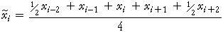

Moving average with odd and even run lengths
A moving average provides a smoothed value at the middle of the times of the values being averaged. For example, if the run length is 5, the smoothed value is identified with the middle time.
This works fine for moving averages of odd numbers of values, as were used in the previous page. However if moving averages are round using an even number of values, the resulting smoothed value are for half-way between the times of the middle observations.

A smoothed value may therefore be for "year 2005.5" which is far from ideal.
A second stage of averaging
To avoid this problem, it is conventional to post-process the moving averages with an even run length by taking a further 2-point moving average to get the values centred on the original times.

This is equivalent to giving half weight to the two outermost values. When based on a 4-point moving average, this method therefore uses an average of the 3 values centred on each value and two further values with half-weight.

We will call these values 4-point centred moving averages.
These centred averages are particularly useful when analysing seasonal data. For example, 12-point centred moving averages are often used for monthly data.
Southern Oscillation
The Southern Oscillation Index is defined as the barametric pressure difference between Tahiti and the Darwin Islands at sea level. The southern oscillation is a predictor of El Nino which in turn is thought to be a driver of world-wide weather. Specifically, repeated southern oscillation values less than -1 typically defines an El Nino. The time series plot shows the index between January 1984 and December 1987.
This diagram is similar to that on the previous page but allows both odd and even run lengths for the moving averages. When the run-length is even, centred moving averages are shown.
8-point centred moving averages give a smooth display of the changes in the index over time.